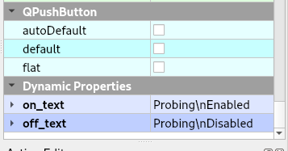
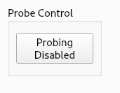
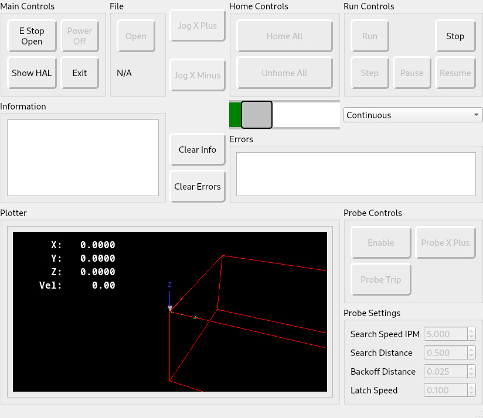
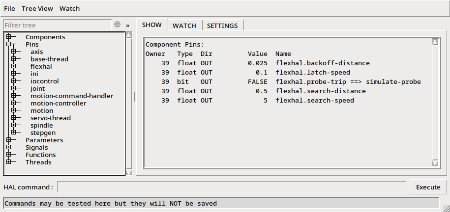

Probing¶
Probe Enable¶
Add a QPushButton named probing_enable_pb and if it is found it will be set as a toggle button. The button will only be enabled when the machine is homed and not running a program. The button is set to checkable in code so it can be styled with :checked and :enabled pseudo-states among others.
Note
The probing_enable_pb requires at least one object that starts with probe_ to be enabled.
QPushButton#probing_enable_pb:enabled:checked {
color: white;
background-color: red;
}
QPushButton#probing_enable_pb:enabled {
color: green;
background-color: yellow;
}
Note
A QPushButton with checkable set to true does not have an unchecked pseudo-state
For more style sheet options see the StyleSheet section
The text on the Probe Enable button can be set by adding two Dynamic Properties named on_text and off_text. Both must be present or no change will take place as there is no default text for the Probe Enable button. See Dynamic Properties
This is what the button would look like with the above settings.
Function¶
When the probing_enable_pb is toggled OFF, any widget with an object name that starts with probe_ will be disabled.
When the probing_enable_pb is toggled ON the widgets that start with probe_ will be enabled. In addition, spindle controls will disabled, spindle speed set to 0, run controls will be disabled, and MDI controls will be disabled.
QPushButtons with an objectName that start with probe_ and configured as a MDI Button (to launch the probing subroutines) will be enabled when probing is enabled and disabled when probing is disabled.
You can create a HAL Spinbox to use in your probing subroutine. Set the objectName to start with probe_ and it will be enabled and disabled with the probe buttons.
If you’re using a touch-screen, add a Dynamic Property named input and set the value to touch.
Example¶
A minimal example is in the Flex Examples in the Features directory
To run the example, close the E Stop, turn Power on, Home all, then toggle the Enable button. When probing is enabled many other controls are disabled including the spindle.
To test the probe routine press the Probe X Plus button and the X axis will start to move in the positive direction. If you do nothing when the Search Distance is reached you will get an error that the G38.2 move finished without making contact, which is expected.
Press the Probe X Plus button again and after it starts to move, press the Probe Trip button, the X axis will back off the Backoff Distance and start to move in the positive direction again. Pressing the Probe Trip button again will end the probe simulation. The debug information will show up in the Information window.
Subroutine¶
The probe subroutines use the values from the Probe Settings spin boxes. To use these values, you need to make the spin box a HAL pin. See the Spinbox example in the HAL section.
The subroutine is located in a directory called subroutines that is in the configuration directory. The ini’s [RS274NGC] SUBROUTINE_PATH sets the path that LinuxCNC looks for subroutines. Notice the leading ./ specifices that the path to the current directory is where the subroutine directory is.
SUBROUTINE_PATH = ./subroutines
The example files used are the following; notice that the xplus.ngc is in the ./subroutines directory
├── main.hal
├── parameters.var
├── parameters.var.bak
├── postgui.hal
├── probe.ini
├── probe.ui
├── README
├── sim_axis_probe.ini
├── subroutines
│ └── xplus.ngc
└── tool.tbl
In your subroutine you can use user parameters instead of using HAL pins. See the Parameters section.
The subroutine is a normal LinuxCNC subroutine. The magic is how you get the values from HAL pins with #<_hal[pin_name]> where pin_name is the actual pin name in HAL.
(filename xplus.ngc)
(HAL pins #<_hal[pin_name]>)
(G90 absolute distance mode G91 incremental distance mode)
o<xplus> sub
(msg, xplus subroutine)
G20
; initial search
G91 G38.2 F#<_hal[flexhal.search-speed]> X#<_hal[flexhal.search-distance]>
;5061-5069 - Coordinates of a G38 probe result (X, Y, Z, A, B, C, U, V & W)
(debug, Probe Contact at #5061)
; back off using #5061 to compensate for over travel on the probe
G90 G0 X[#5061-#<_hal[flexhal.backoff-distance]>]
; final probe at latch speed
G91 G38.2 F#<_hal[flexhal.latch-speed]> X[#<_hal[flexhal.backoff-distance]> + 0.02]
(debug, Probe Contact at #5061)
o<xplus> endsub
M2
Looking at the Halshow window which pops up when you press the Show HAL button, you can see the flexhal pin names for each spin box and for the Probe Trip button. Also notice that the Probe Trip button is connected to a signal which is connected to motion.probe-input in the postgui.hal file
